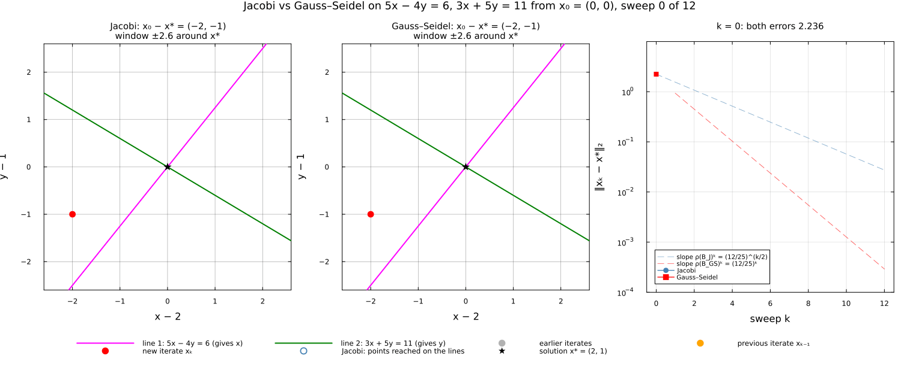
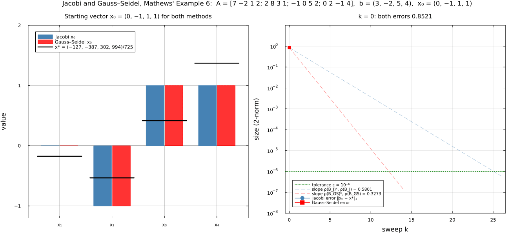

Jacobi and Gauss-Seidel Iteration
Source inspiration: (Mathew 2000-2019).
Description
Jacobi and Gauss-Seidel iteration solve a linear system \(A\mathbf{x}=\mathbf{b}\) by repeated sweeps instead of elimination, which makes them useful for large systems whose matrix is mostly zeros, such as those from boundary value problems and partial differential equations. Both generalize fixed-point iteration: equation \(i\) is solved for \(x_i\), and a sweep updates \(x_1,\dots,x_n\) in turn. Jacobi iteration uses only the values of the previous sweep, while Gauss-Seidel iteration uses each new value as soon as it has been computed:
\[ x_i^{(k+1)}=\frac{1}{a_{ii}}\Bigl(b_i-\sum_{j\ne i}a_{ij}x_j^{(k)}\Bigr)\quad\text{(Jacobi)},\qquad x_i^{(k+1)}=\frac{1}{a_{ii}}\Bigl(b_i-\sum_{j<i}a_{ij}x_j^{(k+1)}-\sum_{j>i}a_{ij}x_j^{(k)}\Bigr)\quad\text{(Gauss-Seidel)}. \]
With the splitting \(A=D-L-U\) of equation (1) below, the error \(\mathbf{e}^{(k)}=\mathbf{x}^{(k)}-\mathbf{x}^*\) satisfies \(\mathbf{e}^{(k+1)}=B\,\mathbf{e}^{(k)}\), where \(B_J=D^{-1}(L+U)\) for Jacobi and \(B_{GS}=(D-L)^{-1}U\) for Gauss-Seidel. The iteration converges for every starting vector if and only if the spectral radius \(\rho(B)\), the largest eigenvalue magnitude, is less than \(1\), and for a typical starting vector the error then shrinks over many sweeps on average by about the factor \(\rho(B)\) per sweep. Strict diagonal dominance of \(A\) is a sufficient condition for both methods to converge. The order of the equations matters: listing the same equations in a different order changes \(D\), \(L\) and \(U\), and can turn a convergent iteration into a divergent one, as Examples 1 and 2 below show.
Animations
Each animation runs one sweep per frame. A panel with a logarithmic axis shows the error \(\lVert\mathbf{x}_k-\mathbf{x}^*\rVert_2\), where \(\mathbf{x}_k\) stands for \(\mathbf{x}^{(k)}\): an error multiplied by a fixed factor \(r\) at every sweep falls on a straight line there, and dashed lines show the slopes \(\rho(B_J)^k\) and \(\rho(B_{GS})^k\) of the two iteration matrices. The iterations run in exact rational arithmetic, so every error is computed exactly before it is rounded for display.
All three animations are new. Mathews’ module has no animation, and the archive of his animations has none for linear systems. Case 1 uses a \(2\times 2\) system chosen for the picture, not one of Mathews’ examples; Cases 2 and 3 animate his Examples 1, 3 and 6 and his Examples 2 and 4. Not animated are the sweeps of the fixed-count runs of Examples 1 and 3 that go beyond the stopping points of Example 6 (Jacobi’s 27th to 30th and Gauss-Seidel’s 15th to 20th), Example 5’s test for diagonal dominance, and Example 7, whose matrix form \(\mathbf{x}^{(k+1)}=\mathbf{c}+M\mathbf{x}^{(k)}\) of Jacobi iteration, with \(M=B_J\) and \(\mathbf{c}=D^{-1}\mathbf{b}\), computes the same iterates as the Jacobi iteration of Example 1. In Example 5 Mathews also computes spectral radii, \(0.702014\) for the matrix of Example 1 and \(5.37399\) for that of Example 2; these are the spectral radii of the matrix of absolute values \(|D^{-1}(A-D)|\), which bound \(\rho(B_J)\) from above, and not of \(B_J\) itself, whose spectral radii are \(0.5801\) and \(5.092\).
Julia source scripts that generated these animations are linked under each case.
Case 1 — Jacobi against Gauss-Seidel in the plane, \(5x-4y=6\), \(3x+5y=11\), \(\mathbf{x}_0=(0,0)\), 12 sweeps
Behavior: The system is strictly diagonally dominant and its solution is \(\mathbf{x}^*=(2,1)\). Equation 1 is solved for \(x\) and equation 2 for \(y\), so a sweep moves horizontally to line 1 (magenta) and vertically to line 2 (green). Jacobi makes both moves from the old point and takes the corner they define as the new point (dashed and dotted lines). Gauss-Seidel makes the vertical move from the point that the horizontal move has just reached, so its path is a staircase, and every Gauss-Seidel iterate \(\mathbf{x}_k\) with \(k\ge 1\) lies on line 2. Here \(B_J=\begin{pmatrix}0&4/5\\-3/5&0\end{pmatrix}\) has eigenvalues \(\pm i\sqrt{12/25}\), so \(\rho(B_J)=0.6928\), and \(B_J^2=-\tfrac{12}{25}I\): the Jacobi error \(\mathbf{x}_k-\mathbf{x}^*\) turns clockwise through the four quadrants, one quadrant per sweep, and every two sweeps it is multiplied by exactly \(-0.48\). Its ratio from one sweep to the next alternates between \(0.6450\) and \(0.7442\). \(B_{GS}\) has eigenvalues \(0\) and \(-0.48\), and from \(k=2\) on every Gauss-Seidel sweep multiplies the error by exactly \(-0.48=\rho(B_J)^2\): the iterates alternate between the two sides of \(\mathbf{x}^*\) along line 2, and one Gauss-Seidel sweep does the work of two Jacobi sweeps. After 12 sweeps the errors are \(0.02735\) (Jacobi) and \(2.907\times 10^{-4}\) (Gauss-Seidel), and Gauss-Seidel was already at \(0.02377\) after 6. Each plane panel zooms in with every frame so that the latest sweep fills it.

Case 2 — Mathews’ Example 6: the system of Example 1 to the tolerance \(10^{-6}\), \(\mathbf{x}_0=(0,-1,1,1)\)
Behavior: The bars of the Jacobi and Gauss-Seidel iterates settle onto the black marks of \(\mathbf{x}^*=(-127,-387,302,994)/725\). Both runs use Mathews’ stopping test, \(\lVert\mathbf{x}_k-\mathbf{x}_{k-1}\rVert_2\le 10^{-6}\): Gauss-Seidel stops after 14 sweeps and Jacobi after 26, as in Mathews’ output, and the stopped Gauss-Seidel bars stay as they are. Both errors start at \(0.8521\) and decrease at every sweep, and the Gauss-Seidel error is the smaller one at every sweep from 1 to 14. The dominant eigenvalues of both iteration matrices are complex pairs, \(0.2403\pm 0.5281i\) for \(B_J\) and \(-0.09375\pm 0.3136i\) for \(B_{GS}\), so the ratio of successive errors keeps oscillating instead of settling: it ranges from \(0.4595\) to \(0.7100\) for Jacobi and from \(0.2282\) to \(0.4782\) for Gauss-Seidel. On average the errors follow the dashed slopes of \(\rho(B_J)=0.5801\) and \(\rho(B_{GS})=0.3273\): the average factors per sweep over the whole runs, \(\bigl(\lVert\mathbf{x}_k-\mathbf{x}^*\rVert_2/\lVert\mathbf{x}_0-\mathbf{x}^*\rVert_2\bigr)^{1/k}\), are \(0.5804\) and \(0.3333\). At every sweep the step of the test (dotted) is larger than the true error, so when the test stops the error is already below the tolerance: \(6.126\times 10^{-7}\) for Jacobi (step \(9.478\times 10^{-7}\)) and \(1.779\times 10^{-7}\) for Gauss-Seidel (step \(4.848\times 10^{-7}\)).

Case 3 — Mathews’ Examples 2 and 4: the same equations in another order, \(\mathbf{x}_0=(-1,1,0,1)\), 10 sweeps
Behavior: Examples 2 and 4 list the equations of Example 1 in the order 2, 4, 1, 3, so the solution \(\mathbf{x}^*\) is the same, but the diagonal becomes \(2, 2, 1, 2\) and no row is diagonally dominant. Now \(\rho(B_J)=5.092\) and \(\rho(B_{GS})=24.22\) are both larger than 1, and both iterations diverge: the error grows at every sweep, to \(1.928\times 10^{7}\) for Jacobi and \(2.472\times 10^{14}\) for Gauss-Seidel after 10 sweeps. The Gauss-Seidel ratio settles at \(\rho(B_{GS})\), within \(0.2\%\) from \(k=6\) on, because the dominant eigenvalue \(24.22\) of \(B_{GS}\) is real and well separated from the next one, \(-6.710\). Over the 10 sweeps the Jacobi ratio ranges from \(4.437\) to \(6.012\), and at sweeps 9 and 10 it is still \(5.286\) and \(4.932\), because the next eigenvalue of \(B_J\), \(-4.371\), is close in size to \(5.092\). The left panel draws \(|x_i|\) on a log axis, filled for a positive coordinate and hollow for a negative one; from \(k=2\) on both methods keep the signs \((-,+,+,-)\). The exact zeros, \(x_3\) of \(\mathbf{x}_0\) and \(x_2\) of both iterates at \(k=1\), cannot be drawn on a log axis, and the panel names them instead.

Matrix Splitting Setup
For a linear system \(A\mathbf{x}=\mathbf{b}\), split
\[ A=D-L-U, \tag{1} \]
where \(D\) is diagonal, \(-L\) is strictly lower-triangular, and \(-U\) is strictly upper-triangular.
\(A=[a_{ij}]\) is strictly diagonally dominant if \[ |a_{ii}|>\sum_{j\ne i}|a_{ij}|,\qquad i=1,\dots,n. \]
Jacobi: \[ \mathbf{x}^{(k+1)}=D^{-1}(L+U)\mathbf{x}^{(k)}+D^{-1}\mathbf{b}. \tag{2} \] Gauss-Seidel: \[ \mathbf{x}^{(k+1)}=(D-L)^{-1}U\mathbf{x}^{(k)}+(D-L)^{-1}\mathbf{b}. \tag{3} \]
Example 1 - Convergent System and Speed Comparison
Solve
\[ \begin{pmatrix} 7&-2&1&2\\ 2&8&3&1\\ -1&0&5&2\\ 0&2&-1&4 \end{pmatrix} \begin{pmatrix}x_1\\x_2\\x_3\\x_4\end{pmatrix} = \begin{pmatrix}3\\-2\\5\\4\end{pmatrix}, \]
with starting guess
\[ \mathbf{x}^{(0)}=(0,-1,1,1)^\top. \]
From the equations,
\[ \begin{aligned} x_1&=\frac{3+2x_2-x_3-2x_4}{7},\\ x_2&=\frac{-2-2x_1-3x_3-x_4}{8},\\ x_3&=\frac{5+x_1-2x_4}{5},\\ x_4&=\frac{4-2x_2+x_3}{4}. \end{aligned} \]
Step 1 (Jacobi, first sweep): use only \(\mathbf{x}^{(0)}\) values.
\[ \mathbf{x}_J^{(1)}= \left(-\frac27,-\frac34,\frac35,\frac74\right)^\top. \]
Step 2 (Gauss-Seidel, first sweep): use newest available values immediately.
\[ \mathbf{x}_{GS}^{(1)}= \left(-\frac27,-\frac{19}{28},\frac{19}{35},\frac{59}{40}\right)^\top. \]
Using the original module outputs for this system:
| Method | Iterations | Reported check |
|---|---|---|
| Jacobi | 10 | \(A\mathbf{x}\approx(3.01,-1.98456,4.9987,3.99042)^\top\) |
| Gauss-Seidel | 10 | \(A\mathbf{x}\approx(3.00001,-1.99991,5,4)^\top\) |
| Jacobi | 20 | \(A\mathbf{x}\approx(2.99997,-1.99994,4.99995,4)^\top\) |
| Gauss-Seidel | 20 | \(A\mathbf{x}\approx(3,-2,5,4)^\top\) |
So Gauss-Seidel reaches the target residual faster for this example.
The exact solution is
\[ \mathbf{x}= \left(-\frac{127}{725},-\frac{387}{725},\frac{302}{725},\frac{994}{725}\right)^\top. \]
Verification:
| Row | Left-hand side | Right-hand side |
|---|---|---|
| 1 | \(7x_1-2x_2+x_3+2x_4=3\) | \(3\;\checkmark\) |
| 2 | \(2x_1+8x_2+3x_3+x_4=-2\) | \(-2\;\checkmark\) |
| 3 | \(-x_1+5x_3+2x_4=5\) | \(5\;\checkmark\) |
| 4 | \(2x_2-x_3+4x_4=4\) | \(4\;\checkmark\) |
Example 2 - Divergence Warning
Consider
\[ A= \begin{pmatrix} 2&8&3&1\\ 0&2&-1&4\\ 7&-2&1&2\\ -1&0&5&2 \end{pmatrix}, \qquad \mathbf{b}= \begin{pmatrix}-2\\4\\3\\5\end{pmatrix}. \]
These are the four equations of Example 1 listed in the order 2, 4, 1, 3, so the exact solution is the same, but the diagonal of \(A\) is now \(2, 2, 1, 2\). Starting from \(\mathbf{x}^{(0)}=(-1,1,0,1)^\top\), the module runs 10 sweeps of each method. Jacobi iteration (Mathews’ Example 2) ends with
\[ A\mathbf{x}^{(10)}\approx \begin{pmatrix} 5.71785\times 10^{7}\\ -3.98521\times 10^{7}\\ -6.64322\times 10^{7}\\ 6.38074\times 10^{7} \end{pmatrix}, \]
and Gauss-Seidel iteration (Mathews’ Example 4) with
\[ A\mathbf{x}^{(10)}\approx \begin{pmatrix} 2.00761\times 10^{14}\\ -9.64939\times 10^{14}\\ -4.38986\times 10^{14}\\ 5 \end{pmatrix}, \]
neither of which is close to \(\mathbf{b}\). The fourth component of the Gauss-Seidel product is exactly \(5\) in exact arithmetic, because every sweep ends by solving equation 4 for \(x_4\); the module prints \(5.00879\), an effect of rounding in its floating-point arithmetic on numbers of size \(10^{14}\).
The matrix above is not strictly diagonally dominant, so basic fixed-point iterations can diverge. Strict diagonal dominance is only a sufficient condition. The exact test is the spectral radius of the iteration matrix \(B\) (see the Description): the iteration converges for every starting vector if and only if \(\rho(B)<1\). For this ordering \(\rho(B_J)=5.092\) and \(\rho(B_{GS})=24.22\); for the ordering of Example 1 they are \(0.5801\) and \(0.3273\).